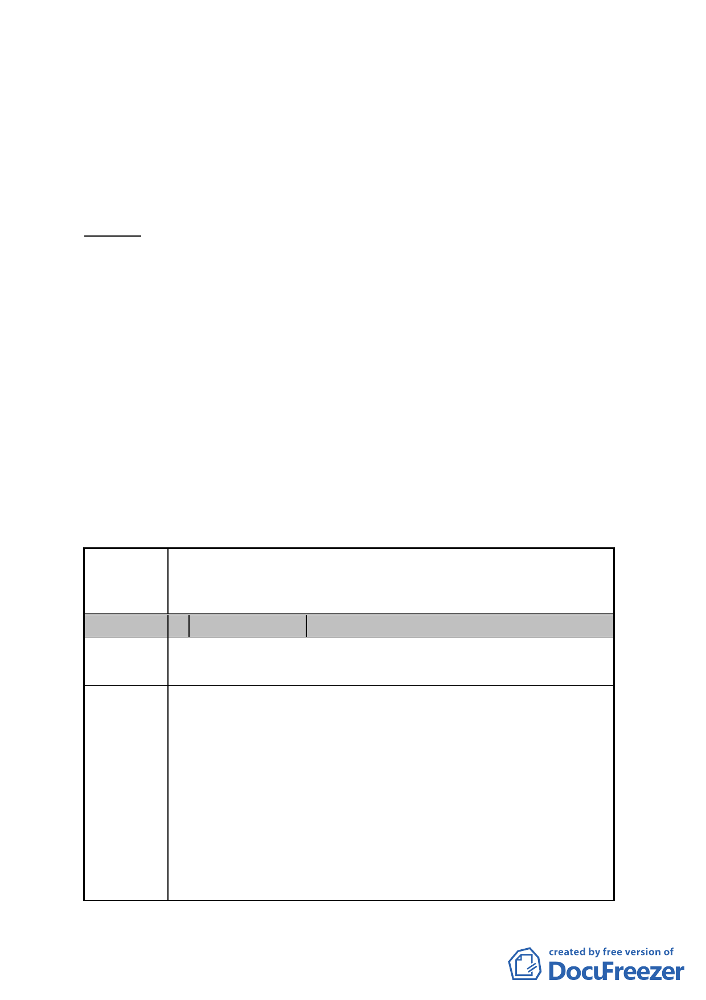

函送公告及計畫書、圖到會，全案自 102 年 9 月 14 日起公開
展覽 30 天。
五、申請暨辦理單位：臺北市政府。
六、法令依據：都市計畫法第 27 條第 1 項第 4 款。
七、公民或團體陳情意見：2 件。
決議：
一、本案照案通過。
二、本案係市府配合內政部 102 年 7 月 4 日台內營字第 1020241926
號公告之「陽明山國家公園計畫（第三次通盤檢討）」案，將
劃出國家公園計畫範圍之土地，變更回復為保護區。因此，
有關公民或團體建議將所持有土地劃出國家公園計畫範圍之
陳情意見，非本會審議範疇。惟為兼顧土地使用權益，請市
府大地工程處就公民或團體陳情地點擬興闢之產業道路位
置，再與陳情人協商。
臺北市都市計畫委員會 公民或團體陳情意見綜理表
案名
變更臺北市士林區菁山段一小段 45 地號等 90 筆土
地及北投區大屯段二小段 111-2 地號等 5 筆土地共五處陽明
山國家公園區為保護區主要計畫案
編 號 1 陳情人
法雨山普宜苑
陳情地點
士林區溪山段二小段 595-6、596、 597、598、599 地號計 5
筆地號上地
陳情理由
本苑土地均有耕作種植竹筍及季節蔬菜及水果，因至善
路 219 巷無巷道通行，居民多年協商，本苑土地無償提供居
民開闢巷道，因巷道致使土地逕為分割多筆。本巷道上下高
低落差將近肆米，適必零亂不完整且不好利用 ·
本苑土地如再分割為國家公園土地及保護區土地因產
發局認定申請工作寮或資材室均有最小面積限制，即 150 坪
才能申請工作寮， 300 坪才能申請資材室，且須壹筆土地面
積計算不得多筆上地合併計算面積，不同分區不得合併仍地
政機關規定。
-4-